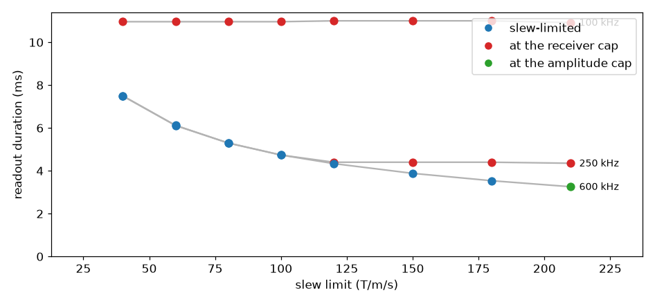
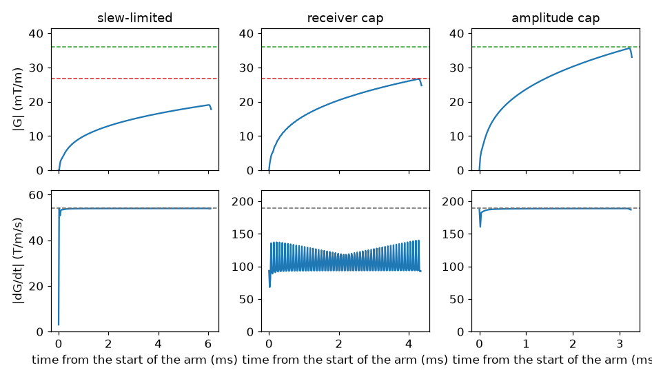
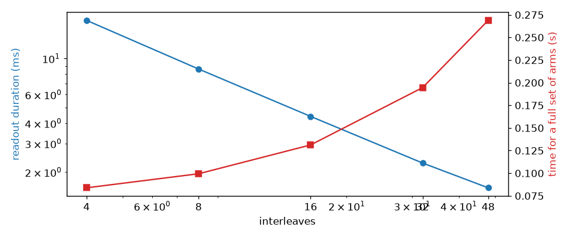

Note
Go to the end to download the full example code.
Gradient, slew and receiver limits on a spiral readout#
Three limits bound the traversal of a spiral arm. Two are properties of the gradient system: the maximum amplitude and the maximum slew rate. The third follows from the receiver: with a dwell time \(\Delta t\) the trajectory may not advance further than \(1/\mathrm{FOV}\) between samples, which caps the gradient amplitude at
independently of what the gradient system could deliver. The solver applies the lowest of the three, so the readout duration depends on the slew rate over part of the design space and not over the rest.
Spiral arms are designed over a grid of slew limits and sampling rates. Peak gradient amplitude and slew rate are measured from each resulting waveform to identify the active constraint.
import numpy as np
import pypulseqpp as pp
import pypulseqpp.sequences as design
#: Gyromagnetic ratio of the proton (Hz/T).
GAMMA = 42.576e6
FOV = 220e-3
MATRIX = 128
MAX_GRAD_MT_M = 40.0
Designing one arm#
The readout module designs the arm from the prescription and the system
limits it is given, and stores the resulting gradient waveform as
an attribute. design_interleaves sets the pitch of the
spiral, against which the readout duration is measured. It is not the number
of arms a scan plays.
def spiral_arm(max_slew, sampling_rate_hz, interleaves=16):
"""One spiral arm designed at the given slew limit and sampling rate."""
system = pp.Opts(
max_grad=MAX_GRAD_MT_M,
grad_unit="mT/m",
max_slew=max_slew,
slew_unit="T/m/s",
rf_dead_time=100e-6,
rf_ringdown_time=30e-6,
adc_dead_time=10e-6,
)
excitation = design.SpatialSelectiveExcitation(system, 15.0, 5e-3)
# The module solves against the package's derated limits, so those are the
# ceilings a measurement of the waveform has to be read against.
return pp.apply_system_derates(system), design.SpiralReadout2D(
system,
excitation.rf,
excitation.gz,
fov=FOV,
matrix=MATRIX,
design_interleaves=interleaves,
readout_bandwidth_hz=sampling_rate_hz,
)
The amplitude and slew the design reached are measured on the waveform it wrote, on its own raster and along the vector rather than per axis, because the two in-plane axes play at once.
def measure(system, arm):
"""Duration, waveform and the ceilings the design was bounded by."""
x = np.asarray(arm.gx.waveform)
y = np.asarray(arm.gy.waveform)
times = np.asarray(arm.gx.tt)
raster = float(times[1] - times[0])
return {
"readout": arm.n_samples / arm.bandwidth_hz,
"time": times - times[0],
"magnitude": np.hypot(x, y) / GAMMA,
"slew": np.hypot(np.diff(x), np.diff(y)) / GAMMA / raster,
"ceiling_grad": system.max_grad / GAMMA,
"ceiling_slew": system.max_slew / GAMMA,
"ceiling_bw": arm.bandwidth_hz / (GAMMA * FOV),
}
def limiting_ceiling(measured, tolerance=0.02):
"""Which ceiling caps the arm's amplitude, or ``'slew'`` if none of them does.
An arm is at its slew limit wherever it is turning, so reaching that limit
says nothing on its own. What decides whether more slew rate would shorten
the traversal is whether the amplitude has reached a ceiling.
"""
cap = min(measured["ceiling_grad"], measured["ceiling_bw"])
if measured["magnitude"].max() < (1.0 - tolerance) * cap:
return "slew"
return (
"bandwidth"
if measured["ceiling_bw"] < measured["ceiling_grad"]
else "amplitude"
)
The design space#
The slew limit is swept over the range a body gradient system covers, and the sampling rate over a range whose receiver cap runs from well below the gradient amplitude limit to above it.
SLEWS = (40.0, 60.0, 80.0, 100.0, 120.0, 150.0, 180.0, 210.0)
RATES = (100e3, 250e3, 600e3)
grid = {}
for rate in RATES:
grid[rate] = []
for slew in SLEWS:
system, arm = spiral_arm(slew, rate)
measured = measure(system, arm)
grid[rate].append(
{"slew_limit": slew, "regime": limiting_ceiling(measured), **measured}
)

/home/runner/work/pypulseqpp/pypulseqpp/docs/build/site/pypulseqpp/_events.py:234: UserWarning: Specified RF delay 0.00 us is less than the dead time 100 us. Delay was increased to the dead time.
made = factory(*args, **kwargs)
slew 100 kHz 250 kHz 600 kHz
40 10.96 ms band 7.49 ms slew 7.50 ms slew
60 10.96 ms band 6.11 ms slew 6.12 ms slew
80 10.96 ms band 5.30 ms slew 5.30 ms slew
100 10.96 ms band 4.74 ms slew 4.74 ms slew
120 11.00 ms band 4.40 ms band 4.34 ms slew
150 11.00 ms band 4.40 ms band 3.88 ms slew
180 11.00 ms band 4.40 ms band 3.54 ms slew
210 10.92 ms band 4.35 ms band 3.26 ms ampl
<Figure size 946x440 with 1 Axes>
The three rates behave differently. At the lowest, the receiver’s cap is so far below the gradient amplitude limit that the arm reaches it within the first turn, and the duration is the same across the whole slew range. At the middle rate the amplitude climbs at the slew limit until it meets the receiver’s cap, after which raising the limit changes the duration by about a percent. At the highest rate the receiver’s cap is above the gradient amplitude limit, so the amplitude the arm settles at is the hardware’s, and it is only reached at the top of the slew range; below that the arm is still climbing when it ends.
The flat part of the middle curve is not exactly flat, and the reason is that an arm at constant amplitude is still turning. Holding \(|G|\) while the direction rotates costs slew rate of its own, and the tighter the turn the more of it, so the slew limit continues to govern the first turns of an arm whose amplitude has already stopped growing.
The waveform in each regime#
One design from each regime, with the ceilings drawn on the axes they bound.

<Figure size 946x550 with 6 Axes>
In the slew-limited design the amplitude is still climbing when the arm ends. In the other two it reaches a ceiling part way out and stays there, and the slew falls away from its limit once it does: the remaining traversal is at constant speed, and the only turning left is the angular one. The slew rate is at its limit early in every one of them, which is why reaching the slew limit is not by itself what tells the three apart.
The ceilings are drawn at the system’s derated limits rather than at the numbers passed in. A design whose two in-plane axes play together is solved against a per-axis limit reduced by \(\sqrt{2}\), so that the vector magnitude drawn here respects the scalar limit.
Interleaves against arm duration#
Within one regime the pitch is the remaining lever: more interleaves cover k-space with shorter arms, and the set of them takes correspondingly longer to play.
interleaves = []
for count in (4, 8, 16, 32, 48):
system, arm = spiral_arm(150.0, 250e3, interleaves=count)
interleaves.append(
{
"interleaves": count,
"readout": arm.n_samples / arm.bandwidth_hz,
"scan": count * arm.duration,
}
)

arms readout per arm full set
4 17.15 ms 20.96 ms 0.084 s
8 8.61 ms 12.42 ms 0.099 s
16 4.40 ms 8.20 ms 0.131 s
32 2.27 ms 6.08 ms 0.195 s
48 1.60 ms 5.60 ms 0.269 s
<Figure size 946x396 with 2 Axes>
The arm duration falls almost as the reciprocal of the interleaf count while the time for a full set rises less than proportionally, because each repetition carries an excitation and a rewind whose duration does not depend on the pitch. Off-resonance and \(T_2^*\) act over the readout duration, so the interleaf count is the remaining way to shorten it once the slew rate no longer does.
Total running time of the script: (0 minutes 0.987 seconds)